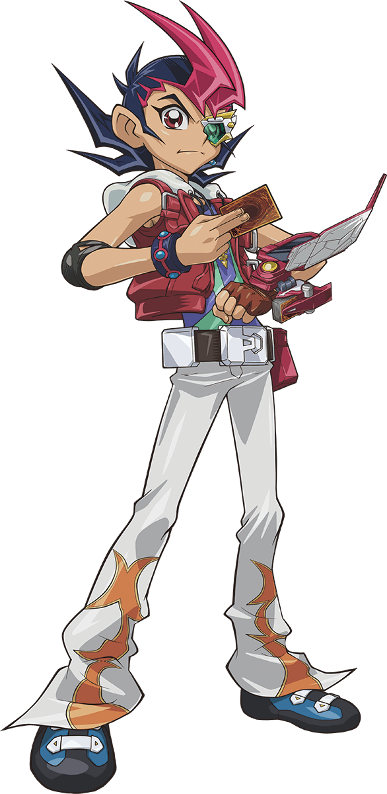
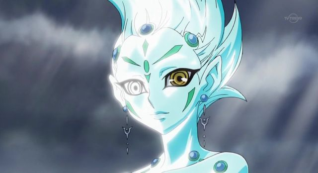
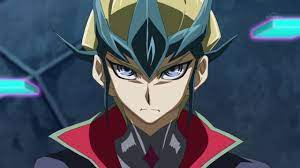
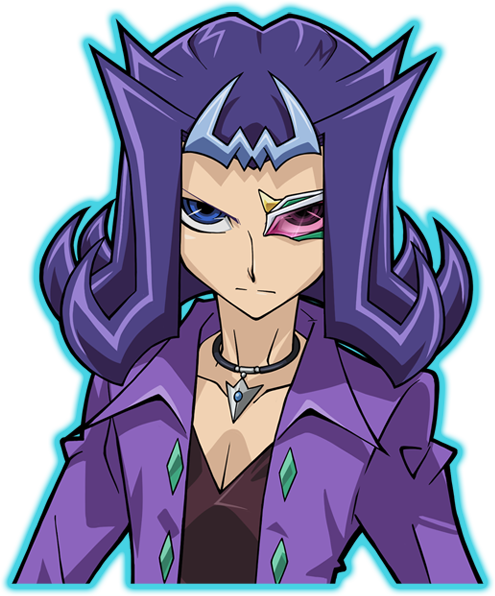

Yuma Tsukumo est le protagoniste principal de la série Yu-Gi-Oh! Zexal. C'est un Duelliste pas très doué qui rêve de devenir un grand champion des Duels. Il rencontre Astral au cours d’un Duel, et ils vont devoir partir ensemble à la recherche de Monstres appelés les "Numéros" pour reconstituer la mémoire d’Astral.

Astral est un être de l'AstraWorld, compagnon puis ami de Yuma Tsukumo. Il est également le second personnage pincipal de la série animée Yu-Gi-Oh! ZEXAL. Il fût envoyé dans le monde des humains par Eliphas afin de détruire le Monde Barian pour le faire évoluer. Cependant, après que Kazuma Tsukumo ait modifié son programme, il fût envoyé à Yuma Tsukumo à la place. Malheureusement, à son arrivée sur Terre, il n'a plus aucun souvenir. Il se rappelle seulement de son nom et est également un expert en terme de duel. Sa mémoire est dispersée dans les 99 cartes numéros qu'il lui faudra collecter avec l'aide de Yuma Tsukumo. Sachant sa vie en danger à chaque fois que Yuma engage un duel, Astral est toujours là pour partager son expérience avec Yuma. En premier lieu, seul ce dernier peut d'ailleurs le voir. Le lien qui unit Yuma et Astral, au début tendu, se consolide à chaque instant pour créer une véritable amitié.

Kite Tenjo , connu sous le nom de Kaito Tenjo dans le manga et la version japonaise, est le fils du Dr. Faker , un Chasseur de Nombres , et l'un des personnages principaux qui rassemblait "Numbers" pour son père afin d'aider son frère autrefois malade, Hart Tenjo , dans Yu-Gi-Oh! ZEXAL . Assisté d'un robot nommé Orbital 7 , Kite était l'adversaire le plus direct des trois premiers arcs, mais ses "Numbers" sont désormais en possession de Yuma Tsukumo et Astral .

Reginald Kastle , connu sous le nom de Ryouga Kamishiro surnommé « Shark », est l'un des personnages principaux et l'antagoniste final de Yu-Gi-Oh! ZEXAL autre que la menace invisible pour Astral World . Il est l'un des amis proches et rivaux de Yuma Tsukumo .Il se révèle plus tard être Nash, le chef des sept empereurs bariens . Déterminé à ne plus laisser les tragédies s'abattre sur son peuple, il a trahi Yuma et ses amis pour sauvegarder leMonde barien . Il est le seul empereur barien à ne pas être absorbé par Don Mille, ainsi que le seul barien dont les souvenirs d'origine n'ont pas été altérés. Il a ensuite disparu après avoir perdu contre Yuma dans un duel qui mettait en jeu les mondes humain, astral et barien, mais a été relancé avec le reste des empereurs bariens par le code Numeron .
